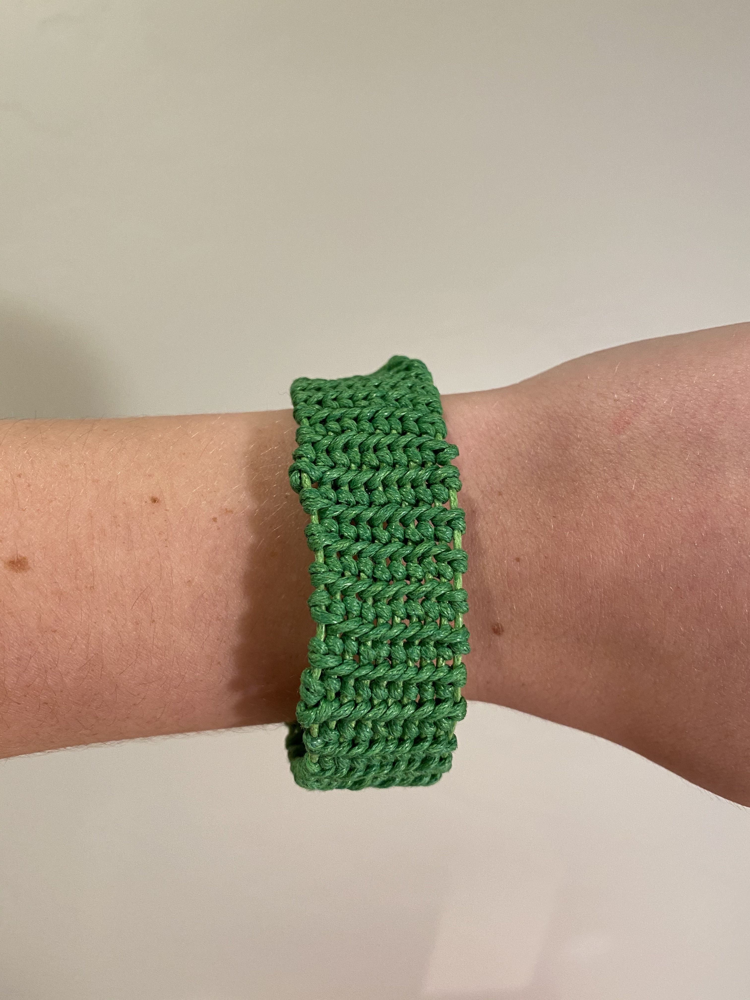
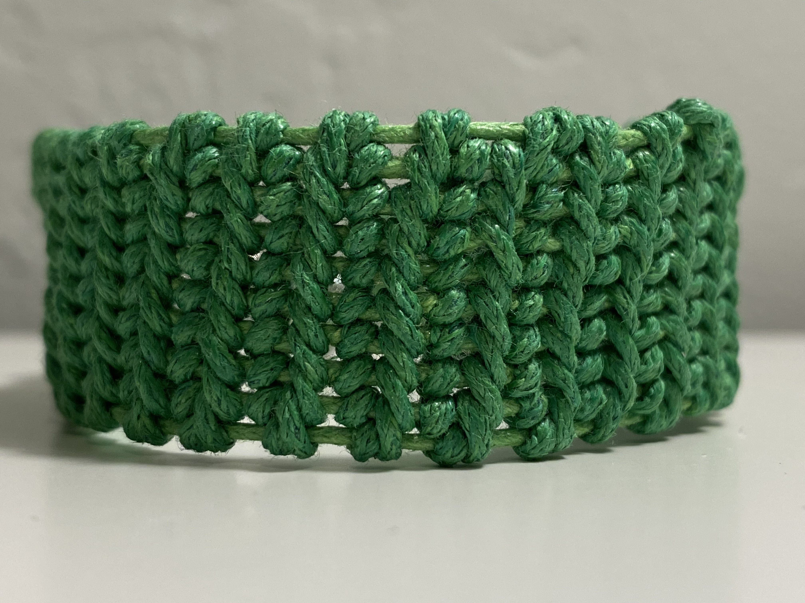

Wisdom: When people think of Athena, one of the first things that comes to mind is her wisdom. With this bracelet you will be able to have the wisdom of someone twice your age. As the saying goes, "the older the wiser!" The colors in the bracelet such as green and white symbolize nature, and more abstractly, wisdom.
 